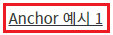
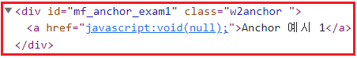
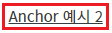
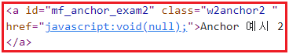
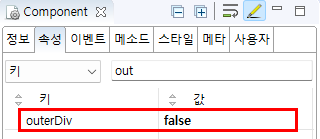

Anchor의 'outerDiv' 속성을 설정별로 비교할 수 있는 예제입니다. 'outerDiv' 속성은 컴포넌트의 HTML 구성에 대한 속성입니다. 이 값은 브라우저에 렌더링될 때 적용됩니다.
설정 값에 따른 방식은 다음과 같습니다.
true
- [default] 컴포넌트의 최상위 요소를 div로 구성하고 자식 요소로 a를 배치합니다.
- HTML 구성 예시: <div id="컴포넌트의 런타임 ID" class="w2anchor"><a>문자열</a></div>
false
- a 요소만 구성합니다.
- HTML 구성 예시: <a id="컴포넌트의 런타임 ID" class="w2anchor2">문자열</a>
- 'outerDiv' 속성에 설정 값에 따라 브라우저에 렌더링 되는 요소의 구조와 class명이 다르므로 CSS 적용 시 유의해야 합니다.
- 컴포넌트의 'outerDiv' 속성의 설정 값을 'true'로 지정하는 경우 클릭되는 범위 지정은 속성 'clickEventElement'을 통해 조절할 수 있습니다.
'outerDiv' 속성을 true로 지정하기
'outerDiv' 속성을 false로 지정하기
1
STEP 1: 실행된 결과를 확인합니다.
예제 영역 '(기본 설정 값) 'outerDiv' 속성을 true로 지정'에 구성된 컴포넌트를 확인합니다.Image 1.브라우저(Chrome) 실행 예시

2
STEP 2: 브라우저의 개발자 도구를 통해 Elements를 확인합니다.
컴포넌트의 최상위 요소를 div로 구성하고 자식 요소로 a가 구성됩니다. (컴포넌트의 런타임 ID는 Frame 구조에 따라 변경될 수 있습니다.)
Image 2.브라우저(Chrome) 실행 예시

Example 1.HTML 코드
<div id="컴포넌트의 런타임 ID" class="w2anchor"> <a>문자열</a> </div>
1
STEP 1: 실행된 결과를 확인합니다.
예제 영역 ''outerDiv' 속성을 false로 지정'에 구성된 컴포넌트를 확인합니다.Image 3.브라우저(Chrome) 실행 예시

2
STEP 2: 브라우저의 개발자 도구를 통해 Elements를 확인합니다.
컴포넌트의 최상위 요소가 a로 구성됩니다. (컴포넌트의 런타임 ID는 Frame 구조에 따라 변경될 수 있습니다.)
Image 4.브라우저(Chrome) 실행 예시

Example 2.HTML 코드
<a id="컴포넌트의 런타임 ID" class="w2anchor2">문자열</a>
1
STEP 1: 컴포넌트의 속성을 설정합니다.
[필수] outerDiv
예시 1) outerDiv 사용
outerDiv="true"
예시 2) outerDiv 미사용
outerDiv="false"
Image 5.웹스퀘어 스튜디오의 Component View 예시

Example 3.Source
<!-- Anchor 컴포넌트의 outerDiv 미사용 예시입니다. --> <w2:anchor outerDiv="false"> </w2:anchor>
outerDiv
clickEventElement